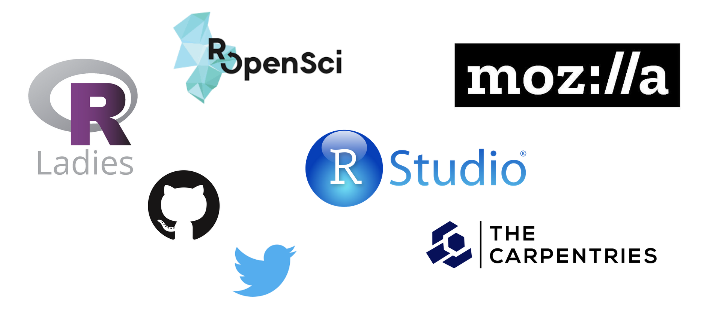
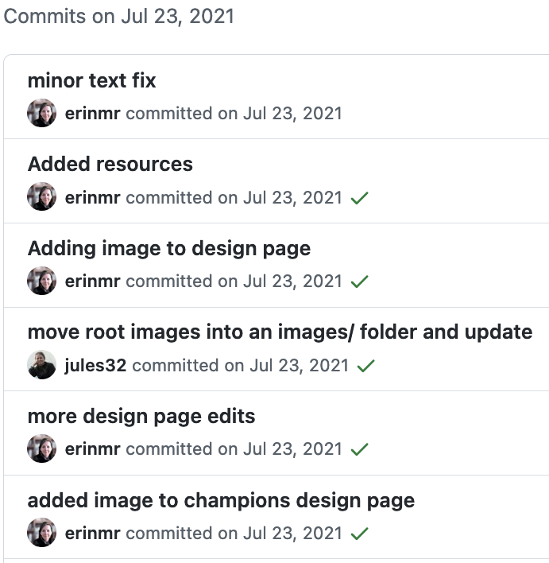
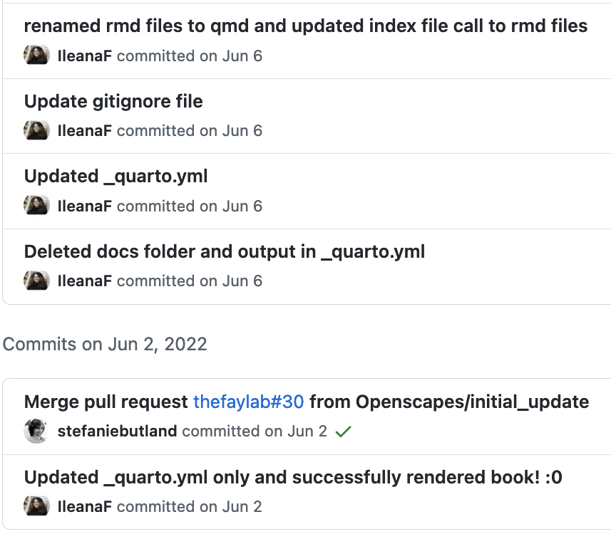

Hello Quarto
share • collaborate • teach • reimagine
https://rstd.io/hello-quarto
Share


- I’m an educator
- I spend more of my time writing things to share than anything else
- One system that allows me to output to multiple formats is not just a time saver, but essential
Next generation R Markdown


Animation: Version of this where the ball is flying to the other side.
Collaborate


Openscapes Origins


Better science for future us:
- more open, reproducible, efficient, diverse, inclusive, kind
- for ourselves, teams, communities, in next hour, week, decades
Openscapes Approach
We mentor teams to better tackle their Q’s by modernizing shared practices, underpinned by existing tools.


Earthdata is migrating to the Cloud
Traditionally data archived at 12 Data Centers.
Researchers download data and analyze locally.

New paradigm
Researchers will move their compute to the Cloud.
NASA staff collaborate across Data Centers to support.
NASA-Openscapes
Develop a cross-NASA Mentor community to create and teach a common set of Earthdata tutorials that Mentors iterate for specific science examples


Focus on finding the common, teaching culture, contributing as part of their jobs
- Carpentries Instructor Training
- 2i2c JupyterHub & AWS Credits
- NASA-Openscapes GitHub Org
TODO logos

Animation: Version of this where the ball is flying to the other side.
Teach

Animation: Version of this where the ball is flying to the other side.
Reimagine

Open science as a movement
Open source developers, teachers, mentors, research software engineers, community managers…
Open science as part of the climate movement

“What are you good at? Do that. Do that in the service of climate”
- Ayana Elizabeth Johnson, All We Can Save
Upskilling through onboarding




Reimagining together
Openscapes Approach:
- Create space & place
- Build trust & psychological safety
- Find the common
- Foster open culture: learn, teach, reuse, growth mindset
- Meet people where they are
- Prioritize inclusion in daily work
- Introduce tech intentionally
- Share ideas earlier; imperfect
- Make the implicit explicit
“Addressing the climate crisis…will take everyone. We cannot, we must not, go it alone” - Ayana Elizabeth Johnson & Katharine Wilkinson, All We Can Save
Summary
Illustration: Presented as 4 quadrants in the Quarto logo
Share.
Teach.
Collaborate.
Reimagine.
Openscapes
Approach:
- Create space & place
- Build trust, safety
- Find the common
- Model open culture: learn, teach, reuse
- Meet people where they are
- Share ideas earlier
- Make the implicit explicit
Fostering a culture of reuse
- Interoperability (language, tooling, people) –>
- Enabling collaborations, transferrable skills
- Can collaborate with people sooner.
- Tooling that makes things easy can help be culture change
- Tooling > culture change bc repro and sharing
Openscapes Approach
Researcher-centered, focused on teams. Practice and feel safe working openly with yourself and your team; then ease into more.
Create space & place to explore & learn. Cohort Calls, Seaside Chats, Co-Working; GitHub, R, Python, Quarto, Google Drive, Slack; Efficiency & Inclusion Tips.
Cultivate relationships & real connections. Welcoming folks w/ diverse backgrounds; meeting where they are; skills to empower immediate work; kinder science.
Open culture: Learning, teaching, iterating. Not a checklist - a continual practice. Imperfect, messy. Takes time.